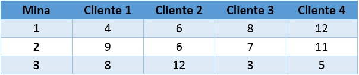
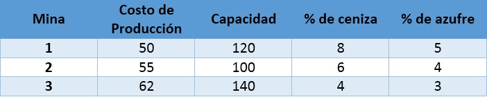

Se resolverá un problema de programación lineal en Excel y en Lingo, con una explicación de varios conceptos importantes los cuales fueron aprendidos en el curso de Investigación de operaciones I. Adicionalmente se colocaran videos tutoriales de la resolución del problema.
Problema
Una empresa minera tiene tres minas y cuatro clientes, sus costos de transporte se presentan en el siguiente cuadro:
Cuadro 1: Costos de transporte
La demanda de cada cliente en toneladas se muestra en el siguiente cuadro:
Cuadro 2: Demanda
Las capacidades de producción de cada mina variará para cada caso, además para garantizar la calidad del mineral enviado es necesario garantizar su calidad, por ello este no debe exceder los porcentajes máximos de ceniza ni de azufre que son 5% y 4% respectivamente. Dichos porcentajes son presentadas en los siguientes gráficos:
Cuadro 3: Otras restricciones
Lista de conceptos
Análisis de sensibilidad
Es un estudio que analiza los cambios en los coeficientes de un problema de programación lineal según la solución óptima y la función objetivo.
Costo reducido
Cantidad por la cual un coeficiente de la función objetivo tendría que mejorar (aumento para un problema de maximización o disminución para un problema de minimización) antes de que sea posible que la variación correspondiente tome un valor positivo en la solución óptima.
Función objetivo
Define numéricamente el valor que se va a maximizar o minimizar en un modelo de programación lineal
Precio sombra o precio dual
Nos muestra en cuanto variaría el valor de la solución óptima por unidad de aumento en el lado derecho de una restricción.
Regla del 100%
Indica cuándo los cambios simultáneos en dos o más coeficientes de la función objetivo no causarán un cambio en los valores óptimos para las variables de decisión. También puede aplicarse para indicar cuándo dos o más modificaciones en el lado derecho de las restricciones no causarán un cambio en cualquiera de los precios duales.
Lado izquierdo de la restricción
Nos muestra los recursos ya sea de materiales, o de capacidades que estamos usando.
Lado derecho de la restricción
Nos muestra los recursos ya sea de materiales, o de capacidades máximas o mínimas que son un impedimento o nos limitan en nuestra optimización.
Conclusiones del caso
Para el presente caso el código en LINGO se realiza en menor tiempo, y nos permite hacer un análisis de sensibilidad. A diferencia de Excel que para algunos casos no permitirá obtener este análisis de sensibilidad.
Se presentan a continuación dos video-tutoriales los cuales explican la resolución en Excel y Lingo
Observación: Para el caso de Lingo: Existen varios costos que se pueden considerar como datos numéricos, y son datos que no generan dificultades, estos pueden ser colocados en la función objetivo directamente o como variables adicionales para poder cambiarles su valor numérico posteriormente.
Documentación Adicional
Tutorial en EXCEL Tutorial en LINGODiapositivas del video: Descargar. Diapositivas de la explicación del curso..